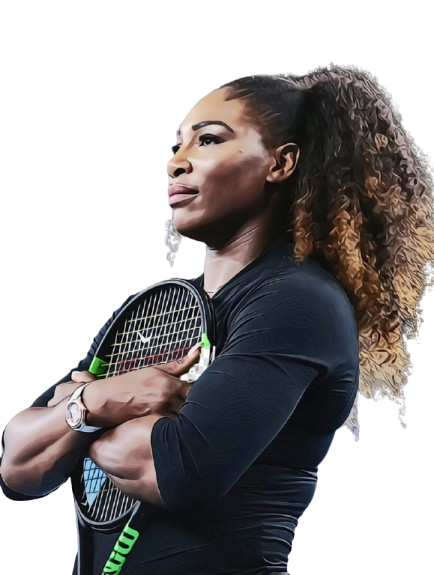

Vie sportive : La reine du tennis
Née en 1981 et élevée à Compton (Californie), Serena Williams a révolutionné le tennis féminin par sa puissance et sa longévité.
- Palmarès : 23 titres du Grand Chelem en simple, 14 en double avec sa sœur Venus et 4 médailles d'or olympiques.
- Domination : 319 semaines numéro 1 mondiale, suivies d'un retour remarqué en double en 2026.
Vie personnelle : Famille et résilience
Mariée depuis 2017 au cofondateur de Reddit, Alexis Ohanian, et mère de deux filles (Olympia et Adira), elle a surmonté de lourdes épreuves : l'assassinat de sa demi-sœur Yetunde en 2003 et une embolie pulmonaire qui a failli lui coûter la vie lors de son accouchement en 2017, juste après avoir remporté l'Open d'Australie enceinte.